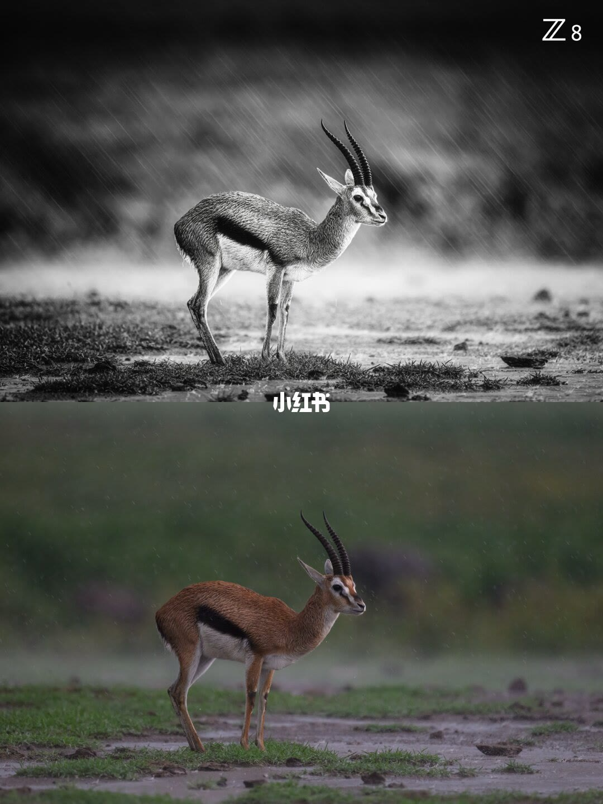
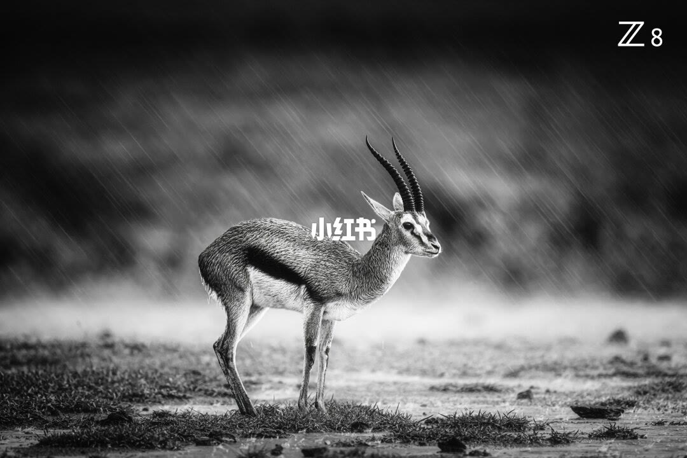
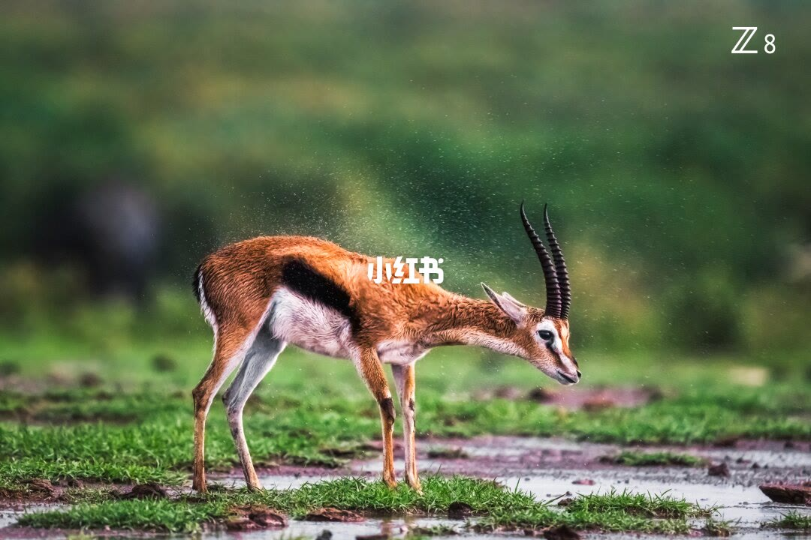
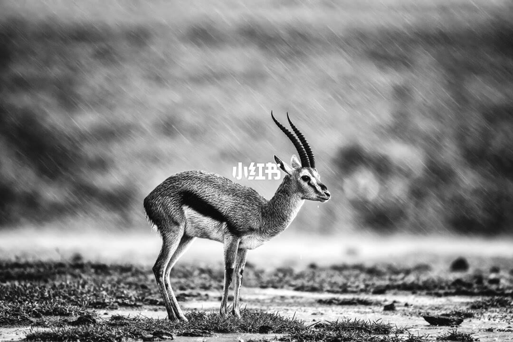

图文实录 · 小红书 · 行摄歪杰
论同一场景，不同快门的表现形式🦌
同一片草地、同一只侧身的有角动物，雨可以画成长斜线、短雨迹，或贴在身上的水雾。四页都没有把快门秒数印在画面上，所以能比较的是雨的样子，不能把某一页指认为某一档快门。
1/4
一页里叠了黑白长雨丝和彩色短雨迹

这一页是上下两张叠在一起。上半是黑白：动物侧身向右站着，角上有环纹，体侧一条深色横纹，腹侧较浅。雨被拉成从左上落到右下的白线，身体仍清楚。右上角印着 Z 8。上下两半的接缝处有小红书水印。
下半是彩色的相近机位：背是棕色，腹是白的，体侧黑纹还在，背景虚成绿灰色。雨还在，但是短线或碎点，没有连成上半那种长线。下半认不出 Z 8。两半都没有印快门秒数、光圈或感光度。
2/4
黑白长雨丝的单张，和第 1 页上半几乎重合

横幅黑白。动物仍侧身向右站着，角、体侧深色横纹和脚下的草、泥都还在。雨仍是斜向白线，背景虚掉。右上角印着 Z 8，画面中间有小红书水印。没有印快门秒数。
这一页和第 1 页的上半几乎是同一张，只有很少的像素差。它不是另一档快门的新对照。
3/4
彩色，水在身上散开，不是满幅长雨丝

彩色横幅。还是侧向右的同一类动物：环纹长角、体侧深色横纹、浅色腹部，站在带草的深色泥地上，背景是虚化的绿色。这一页的水主要在头颈和背上，是一团细点，天空一带没有前两页那种连成线的斜雨。头附近比躯干更糊，像正在甩。右上角印着 Z 8，中间有小红书水印。没有印快门秒数。
姿态和第 1、2 页站着等雨的那张不是同一瞬间。图上没有写这些水珠是雨点还是甩下来的水。
4/4
更亮的黑白，雨丝更长

黑白横幅，整体比第 2 页更亮。动物仍侧身向右站着，角和体侧深色横纹还在，背景更浅、更虚。雨仍是斜向白线，线比第 1 页上半和第 2 页更长，铺得更满。中间有小红书水印。右上角认不出 Z 8。没有印快门秒数。
汇总
雨的样子能比，秒数对不上页
结论。同一场景里，雨可以是长斜线、短雨迹，或贴着身体的水雾。四页都没有把快门秒数印出来，表现形式看得到，秒数指不到某一页。
支撑页。上下对照在 1/4：上半黑白长雨丝，下半彩色短雨迹。2/4 是上半那张黑白的单张，几乎重合。贴身水雾和头部发糊在 3/4。更长、更亮的黑白雨丝在 4/4。右上的 Z 8 出现在 1/4 上半、2/4 和 3/4。
边界。文案写了 3 月肯尼亚强降雨里一只瞪羚站着等雨减弱；800mm 定焦通常把快门放在 1/800s 以上，高速会把雨点凝固成杂点；这组降到 1/60s，稳住机身，让雨拉成斜线。成片一行是 Nikon Z8 + NIKKOR Z 800mm f/6.3 VR S，f/6.3，1/60s，ISO 200。这些秒数、光圈和感光度都不在四张图上，不能指定哪一页是 1/60s、哪一页是 1/800s 以上。第 3 页动物在甩水，和第 1、2、4 页站着的姿态不是同一瞬间。黑白是后期还是机内，图上没写。